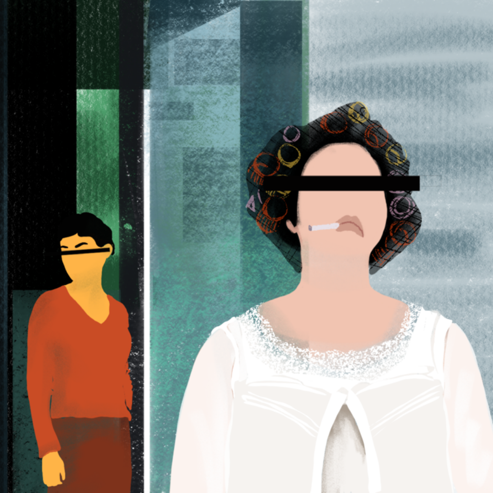

Izzy's Collection of Work.
Starting from my most recent work, below is a collection of the stories I've written for two student-run publications on campus: Globalists and The Daily Orange.



Starting from my most recent work, below is a collection of the stories I've written for two student-run publications on campus: Globalists and The Daily Orange.